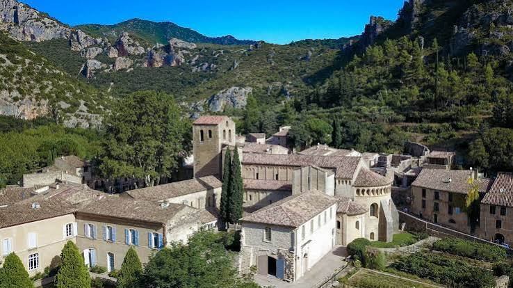

Niché au cœur des gorges de l'Hérault, dans un val si retiré qu'un disciple de saint Benoît d'Aniane le décrivait comme un lieu que « quiconque aime la solitude doit nécessairement trouver », Saint-Guilhem-le-Désert doit sa naissance à un guerrier devenu moine. En 804, Guilhem, petit-fils de Charles Martel et cousin de Charlemagne, comte de Toulouse et duc d'Aquitaine, dépose les armes après une victoire éclatante sur les Sarrasins à Barcelone en 801 et se retire dans ce val alors appelé Gellone pour y fonder le monastère Saint-Sauveur.

Le cloître roman de l'abbaye de Gellone, cœur du village
Guidé par son ami saint Benoît d'Aniane, Guilhem emporte dans sa retraite une relique de la Vraie Croix offerte par Charlemagne lui-même. À sa mort en 812, il est enterré dans l'abbaye ; sa légende, reprise par les troubadours dans la fameuse Geste de Guillaume d'Orange, contribue à sa canonisation en 1066 et fait de Gellone, dès le Xe siècle, une étape incontournable sur le chemin de Saint-Jacques-de-Compostelle.
Du XIe au XIVe siècle, la ferveur des pèlerins permet la construction de l'abbatiale actuelle, l'un des plus beaux témoignages de l'art roman languedocien. Mais l'histoire n'épargne pas Gellone : saccagée pendant les guerres de Religion, vendue comme bien national à la Révolution — ses bâtiments accueillant tour à tour une filature et une tannerie — l'abbaye n'est sauvée de la ruine qu'à partir de 1840, grâce à sa prise en charge par les Monuments historiques.
Autour de ce sanctuaire s'est développé, au fil des siècles, un village médiéval de pierre dorée dont l'authenticité et le patrimoine exceptionnel valent aujourd'hui à Saint-Guilhem-le-Désert d'être classé parmi les Plus Beaux Villages de France.
⛪
Visite pratique
⏱️
Durée
Environ 2h (village + abbaye)
📊
Difficulté
Facile, accessible à tous
🚗
Accès
Gorges de l'Hérault, 40 km au nord-ouest de Montpellier
🎟️
Tarif
Abbaye ouverte tous les jours, entrée libre
✦ Infos pratiques
Abbatiale Nef romane culminant à 18 mètres, crypte et reliques de saint Guilhem
Cloître Arcades et chapiteaux sculptés des XIe-XIVe siècles
Place de la Liberté Platane multicentenaire, cœur battant du village
Cirque de l'Infernet Sentier vers le Val de Gellone et les Fenestrettes, encorbellement médiéval
Pont du Diable Pont médiéval de 873, aux portes des gorges de l'Hérault, classé UNESCO
Grotte de Clamouse À proximité, concrétions et stalactites remarquables
1
L'abbaye de Gellone
Découvrez l'abbatiale de la Transfiguration-du-Seigneur, son cloître roman et le musée lapidaire installé dans l'ancien réfectoire des moines.
2
Les ruelles du village
Maisons romanes, tour des prisons du XVIIe siècle et façades en pierre dorée bordent des venelles pavées propices à la flânerie.
3
La place de la Liberté
Sous son platane multicentenaire, cette place ombragée est le lieu de rencontre par excellence entre habitants et visiteurs.
4
Le Val de Gellone et le Cirque de l'Infernet
Un sentier en balcon, emprunté par les pèlerins de Compostelle depuis le Moyen Âge, mène au cœur de falaises vertigineuses couvertes de thym et de pins.
5
Le Pont du Diable
Construit en 873 par les abbayes d'Aniane et de Gellone, ce pont légendaire verrouille l'entrée des gorges de l'Hérault et se prête à la baignade et au canoë.
🏆
Reconnaissance & patrimoine
🌐
Patrimoine mondial de l'UNESCO
L'abbaye de Gellone est inscrite depuis 1998 au titre des Chemins de Saint-Jacques-de-Compostelle en France, tout comme le Pont du Diable voisin.
⭐ UNESCO 1998
🏅
Plus Beaux Villages de France
Le village figure parmi les Plus Beaux Villages de France, distinction saluant l'exceptionnelle conservation de son patrimoine bâti.
Label national
🏛️
Monument historique dès 1840
L'abbatiale figure dans la toute première liste des monuments historiques protégés en France ; le cloître est classé en 1889, puis l'abbaye entière en 1987.
MH depuis 1840
⚔️
La légende de Guilhem, du guerrier au saint
Bien après sa mort, la légende s'empare de Guilhem pour en faire un héros de chanson de geste : la Geste de Guillaume d'Orange, composée par les troubadours du XIIe et XIIIe siècle, raconte les exploits d'un personnage fougueux, engagé dans des combats acharnés contre les Sarrasins, très éloigné du moine historique mais qui contribue grandement à la renommée de l'abbaye, laquelle prend définitivement son nom au XIIe siècle.
Cette vallée de Gellone est un lieu si retiré que quiconque aime la solitude doit nécessairement s'y trouver.
— Ardon, disciple de saint Benoît d'Aniane
Une légende locale raconte comment Guilhem, déguisé en servante et armé de sa fidèle épée « Joyeuse », partit affronter un géant retranché dans une forteresse dominant la vallée. Une pie, complice du géant, le reconnut malgré son déguisement et tenta de prévenir son maître ; mais trop confiant, le géant n'en tint pas compte et fut vaincu, précipité au bas des falaises. Depuis ce jour, raconte-t-on, plus aucune pie n'a jamais niché dans la vallée de Gellone.
💬
Le saviez-vous ? Anecdotes de Saint-Guilhem
🗽
Le cloître exilé à New York
En 1906, des éléments du cloître médiéval démantelés à la Révolution furent vendus au collectionneur américain George Grey Barnard : ils sont aujourd'hui exposés au musée The Cloisters, à New York, où ils font partie des collections du Metropolitan Museum.
👑
Un empereur en visite
L'empereur Sigismond de Luxembourg, souverain du Saint-Empire romain germanique, visita en personne l'abbaye de Gellone en 1415, preuve du rayonnement du lieu bien au-delà du Languedoc.
🙏
Un « désert » habité par des moines
Le nom « désert » ne renvoie pas à l'aridité du lieu, mais au monachisme : au Moyen Âge, il désigne un lieu de retraite spirituelle, comme les déserts d'Égypte peuplés par les premiers moines chrétiens dès le IVe siècle.
📍
Aux alentours
Pont du Diable & Gorges de l'Hérault baignade, canoë et Maison du Grand Site, aux portes du village.
Grotte de Clamouse l'une des plus belles grottes d'Europe, célèbre pour ses concrétions et ses stalactites d'exception.
Argileum maison de la poterie à Saint-Jean-de-Fos, accessible en navette gratuite depuis le Pont du Diable.
Olargues autre Plus Beau Village de France du Haut-Languedoc, célèbre pour son propre Pont du Diable et la légende du chat noir.